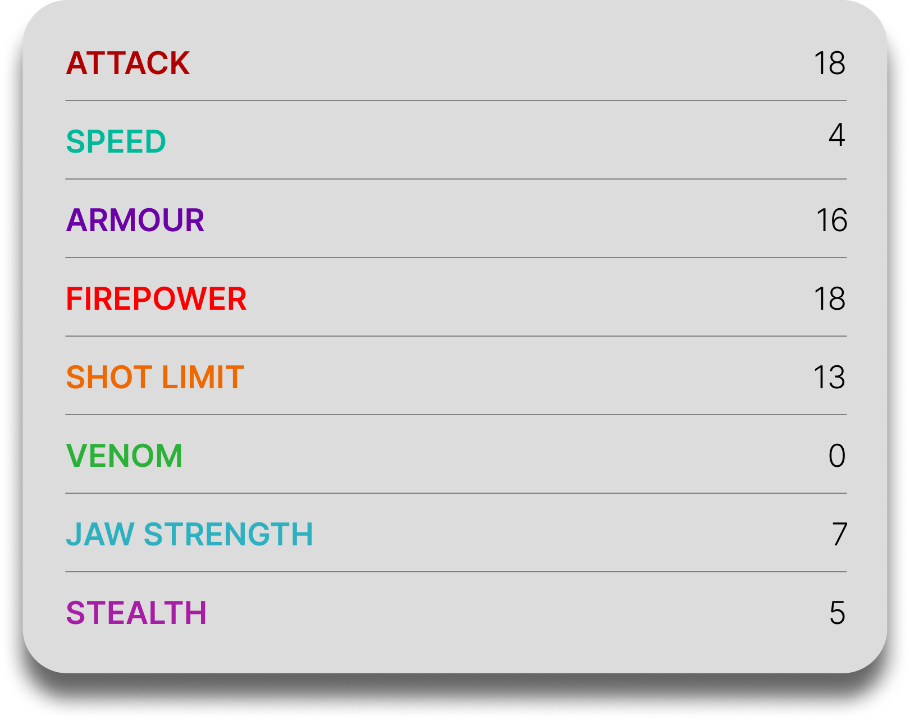

Hobgobbler
General Overview
The Hobgobbler is a small dragon belonging to the Mystery and Stoker Class. Despite its size, it is one of the most chaotic and troublesome dragon species, known for its endless appetite, flammable saliva, and unpredictable feeding frenzies. Hobgobblers often gather in small packs, and while one may seem more annoying than dangerous, a group of them can become a destructive swarm capable of tearing through nearly anything in their path.

Physical Appearance
- Body & Color: It has a small, round, compact body that comes in colors such as purple or green with dark spots and a yellow underside.
- Head & Face: Its face is broad and squat, with large eyes and a strange, almost comical look inspired by a bulldog and a bullfrog.
- Appendages: It has short, sturdy limbs and a low, heavy posture that make it look clumsy, though it can move quickly when excited or hungry.
- Wings & Tail: Its wings are small but functional, while its short tail matches its compact shape and helps maintain balance during movement.
Abilities and Combat
- Flammable Saliva: It produces incendiary slobber that can burst into flames when it touches a solid object.
- Slippery Escape: Hobgobblers can coat themselves in their own saliva to slip out of tight spaces and avoid capture.
- Feeding Frenzy: When hungry, they enter a frenzied state and will devour almost anything they can get to.
- Pack Destruction: In groups, they become far more dangerous and can tear through buildings, ships, and other obstacles through sheer numbers.
- Poison Immunity: Thanks to their diet of glowing slugs, they have developed immunity to poisons made from certain Hidden World plants.
- Speed & Agility: Despite their odd shape, they can move quickly and aggressively, especially when competing for food.
Behavior and Personality
- Intelligence: They are clever enough to cooperate in small groups and defend their feeding grounds together.
- Temperament: Hobgobblers are greedy, excitable, and highly food-driven, becoming aggressive when feeding opportunities appear.
- Behavior: They often live or gather in small groups for protection and cooperation, especially around food sources.
- Social Nature: While troublesome and chaotic, they do show group behavior and can work together when defending territory or searching for food.
- Diet: Their diet consists of Hobgobbler Bait, slugs, flowers, and nearly anything else they can consume.